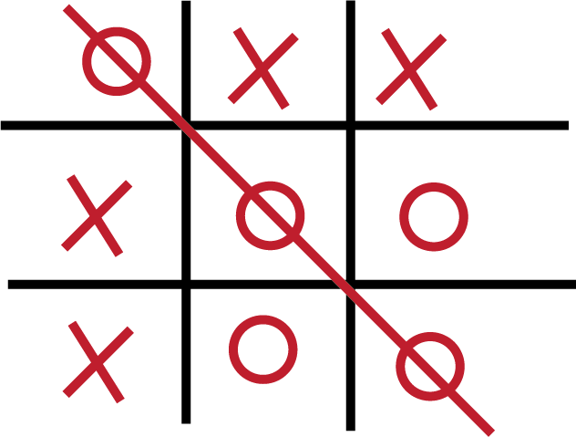

Jogo da Velha
Nome: Jogo da Velha
Curso: Engenharia da Computação
Semestre: Primeiro
Data de início: xx/xx/xxxx
Tempo de Duração do Projeto: Um mês
Design com foco no usuário: Não
Descrição: Foi o terceiro projeto do curso. Os alunos deveriam desenvolver um software que simulasse um Jogo da Velha (Tic-Tac-Toe). O projeto não envolveu inteligência artificial (isto é, não era possível jogar contra o computador), ficando limitado apenas ao duelo entre dois jogadores. Para a realização foi utilizado Tkinter para a criação gráfica do tabuleiro e a marcação de jogadas. Foi o primeiro projeto a não depender exclusivamente do console do python.